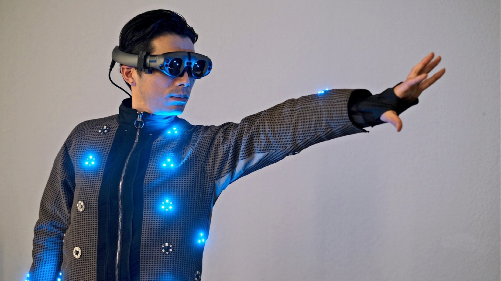

wearable tech
A virtual-reality jacket that replicates the sense of touch, a belt that predicts when a pregnant mother will go into labor, and even a vest that monitors the health of your precious pooch: these are just some of the products emerging in Japan's fast-growing market for smart clothing.
Fitbit

The release of Fitbit in 2009 marked the first consumer-grade wearable focused on activity tracking, precipitating the advent of the smartwatch by four years. Since then,